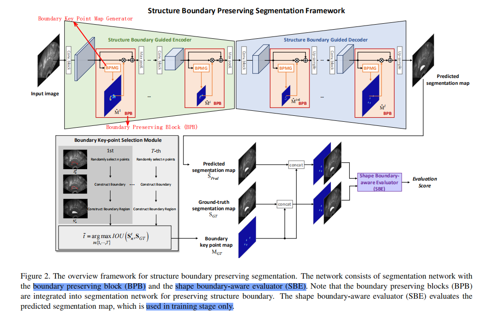
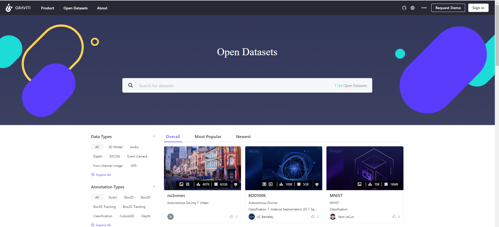
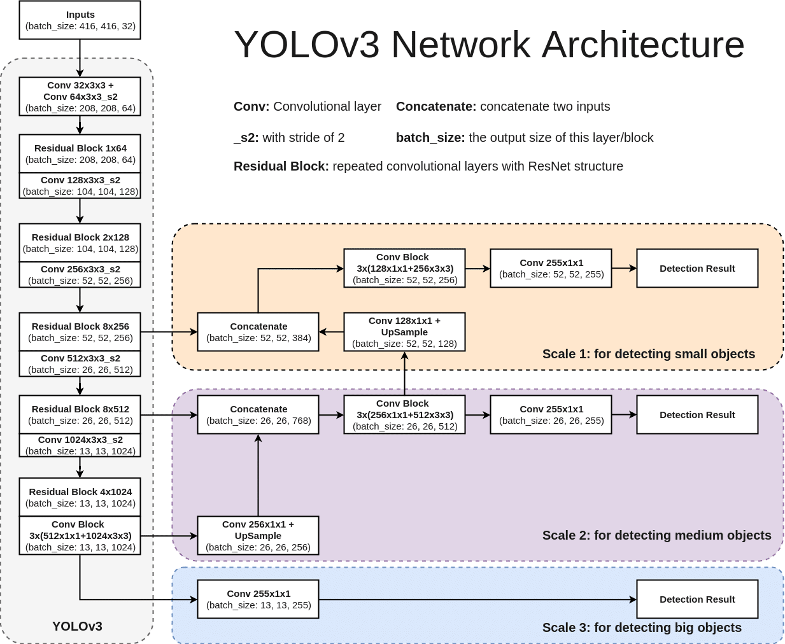
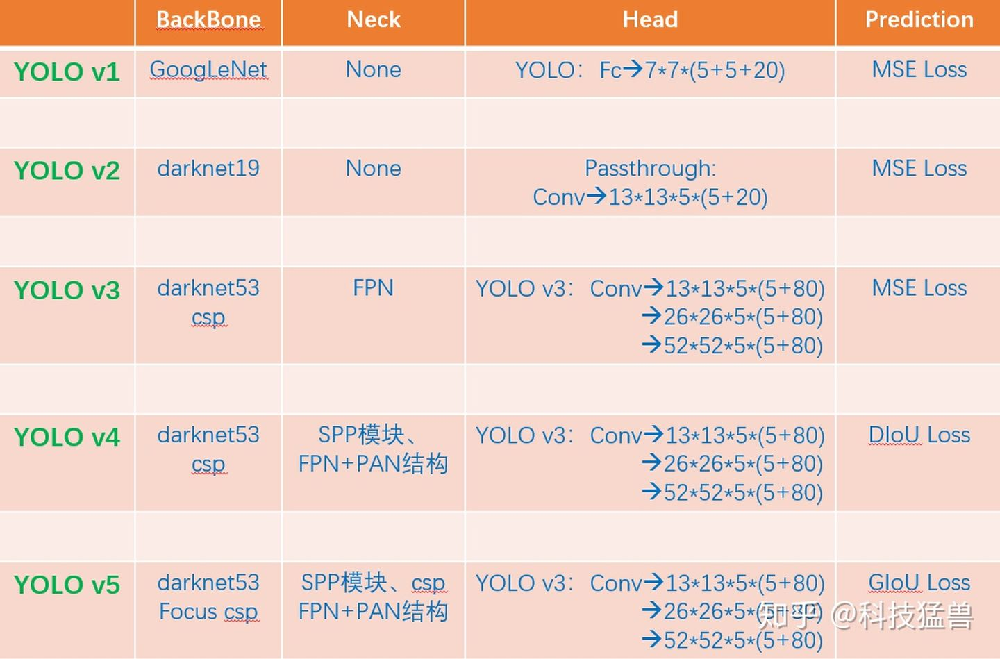

Structure Boundary Preserving Segmentation for Medical Image
with Ambiguous Boundary
边界模糊医学图像的结构边界保持分割
简介
韩国一个大学的文章。
- CVPR 2020
- 与医学图像分割有关
- Cited by: 5
- 没有代码，没啥意思😭，想去看看它的一些细节！
摘要
医学图像分割存在两个关键性问题：
- 医学图像域结构边界的模糊
- 没有专业领域知识的细分领域的不确定性。
为了解决这两个问题，提出保存边界的分割框架（boundary preserving segmentation framework）。
- 边界关键点选择算法
- 边界保留模块（BPB）
提出了一种新型的形状边界感知评价器（SBE），它具有专家指出的地面真实结构信息。SBE 可以根据结构边界关键点向分割网络提供反馈。
Introduction
本论文主要解决如下两个问题：
- 大多数医学图像由于较低的图像分辨率和模糊的纹理，而存在边界模糊问题。不同于自然图像中的对象，医学图像由于分辨率较低，可能没有明显的构造边界。
- 在没有专家知识的情况下，很难自动预测正确的目标区域
提出了一个新型的全自动医学图像分割框架，保留目标区域的结构边界。
- 边界点选择算法：自动选择最适合目标区域的关键点，这些点放置于目标对象的结构边界上；
- 边界保留块（BPB）：将点编码到网络中，进一步利用结构边界信息；
- Shape Boundary-aware Evaluator(SBE)：将专家知识嵌入分割模型；
- 在训练阶段：它试图利用关键图来评估分割图中有多少结构边界得到了很好的保存；
- 根据专家标注的 Ground truth，将预测区域反馈给分割网络。
任何分割模型都可以融合 BPB 和 SBE 来更精确的分割目标区域。
论文的贡献总结如下：
- Boundaries key point selection algorithm
- SEB：将分割图与边界关键点图是否重合反馈给分割网络。
- SOTA
Boundary Key Point Selection Algorithm
首先使用传统的边缘检测算法从 ground truth 分割图中得到目标物体的边界，随机选择 n 个点；然后依次连接 n 个点构造边界区域。为了获得 ground truth 的边界关键点图，测量边界区域之间的重叠区域的数量，通过 IoU 得到 ground-truth 的分割图。
最后，选择使得 IOU 值最大的边界点作为结构边界关键点。
为什么需要 4 个 BPB。
论文有 4 个关键点：
（1）Boundary Key Point Selection Algorithm
（2）Boundary Preserving Block (BPB)
（3）Boundary Key Point Map Generator
（4）Shape Boundary-aware Evaluator (SBE)

Experimental Results
在两个医学图像分割数据集上进行验证，
- PH2 + ISBI 2016 dataset：皮肤病灶分割
- Transvaginal Ultrasound (TVUS) dataset：子宫内膜分割
什么是传统的边界检测算法（conventional edge detection algorithm）？
我觉得作者应该是从标注的 Mask 获取到边界，不然的话整张图像的边界点太多了。
A computational approach to edge detection.
Canny, J. (1986). A Computational Approach to Edge Detection. IEEE Transactions on Pattern Analysis and Machine Intelligence, PAMI-8, 679-698.
Cited by: 38734（这惊人的引用量，ResNet 也就 3K）
彩色图像转为灰度图像的计算公式，RGB2Gray
$$Gray = R \times 0.299 + G \times 0.587 + B \times 0.114$$
matlab
rgb2gray
0.299 * R + 0.587 * G + 0.114 * B
没有想到边缘检测（Edge Detection）也是一个很有意思的方向
一个开放的数据集（检索）下载地址：https://gas.graviti.com/open-datasets

https://gas.graviti.cn/open-datasets
YOLOP：这是第一个可以在嵌入式设备 Jetson TX2上以 23 FPS 速度实时同时处理目标检测/可行驶区域分割和车道线检测这三个视觉感知任务并保持出色精度的工作。
NVIDIA Pascal™ GPU 架构配有 256 个 NVIDIA® CUDA® 核心和高达 8GB 的内存。
我可以考虑在这个嵌入式设备上部署 YOLOP。师兄的这个应该是 NVIDIA® Jetson Nano™，https://www.nvidia.cn/autonomous-machines/embedded-systems/jetson-nano/education-projects/。我下载了它的文档。
YOLOP 可以同时完成 3 个任务： traffic object detection（交通目标检测）、 drivable area segmentation（可驾驶区域分割）和 lane detection（车道检测）。
本周看 YOLO 系列的论文，并且做好笔记！
问题一：怎么知道物体的中心落在 grid cell 中？如何计算物体的中心？
😘 中心点其实非常好求，去看看源代码，主要去看怎么处理 label 的那部分。
center_x= (bbox[0]+bbox[2])*0.5
center_y= (bbox[1]+bbox[3])*0.5
https://zhuanlan.zhihu.com/p/183261974
非极大值抑制，抑制的是与之重合的框。具体操作如下：
- 网络输出很多的预测框，选择置信度最高的框，肯定包含目标，其作为第一个框；
- 利用 IoU，把与第一个框重合的其他框抑制掉；
- 剩下还没有被抑制掉的框，取置信度最高的，得到第二个框；抑制重合框；
- 剩下的没有被抑制的框，取最高，得到第三个框，抑制重合框；
- ……直到没有剩下的框，结束。
多目标检测时，使用非极大值抑制。
YOLOv1 输出为 shape=$7 \times 7 \times 30$。所以标签 label 的 shape 应该为 [batch, 7, 7, 30]。
label 和 output 的 size 为：[batch_size, 7, 7, 30]。每个 output[bi, wi, hi] 是一个 30 维向量。
YOLOv1 的检测头就是最好的 2 个全连接层，参数量很大，存在很大的改进空间。YOLOv1 一共预测 49 个目标，一共 98 个框。
YOLOv2 归一化后的预测值为一个很小的偏移量，有利于神经网络的学习，并且使用偏移量会使得训练过程更加稳定。
Anchor 是从数据集中统计得到的。
什么是 DarkNet？
答：这是 YOLO 作者自己写的一个深度学习框架。
YOLOv3，3 个分支，32 倍下采样（大目标）、16 倍下采样、8 倍下采样（小目标）。

Loss = 定位损失 + 置信度损失 + 分类损失
什么是 geo_loss？
geo_loss + confidence_loss + class_loss。

为什么 Head 变得越来越复杂了？
答：因为特征提取网络变强了，能够支撑检测头做更加复杂的操作。
可视化模型：https://netron.app/
深入浅出Yolo系列之Yolov3&Yolov4&Yolov5&Yolox核心基础知识完整讲解：https://zhuanlan.zhihu.com/p/143747206
yolo系列之yolo v3【深度解析】：https://blog.csdn.net/leviopku/article/details/82660381
目标检测难的地方在于 pipeline 很长，细节很多，“the devil is in the detail”。
YOLO 复现还得看大厂写的代码：https://github.com/Tencent/ObjectDetection-OneStageDet
可以看看 DarkNet 的源码实现！
1.5K 的解读，有非常多的中文注释：https://github.com/hgpvision/darknet
17.2K，在官方的基础上添加了很多的新特性、新算法，新 backbone，是最流行的目标检测开源项目之一：https://github.com/AlexeyAB/darknet
21.3K（作者源码）：https://github.com/pjreddie/darknet